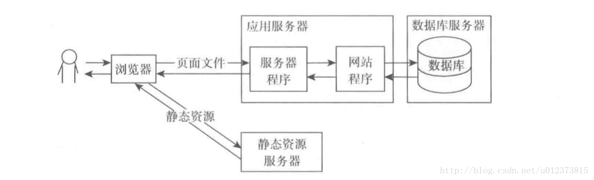
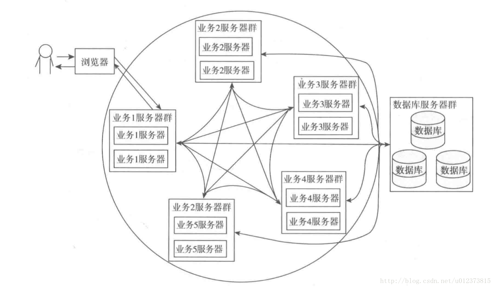
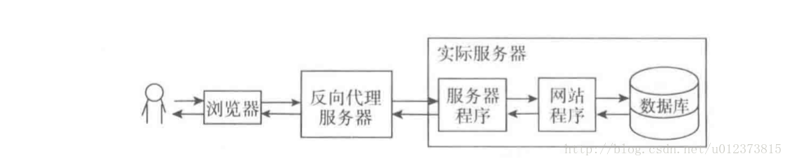
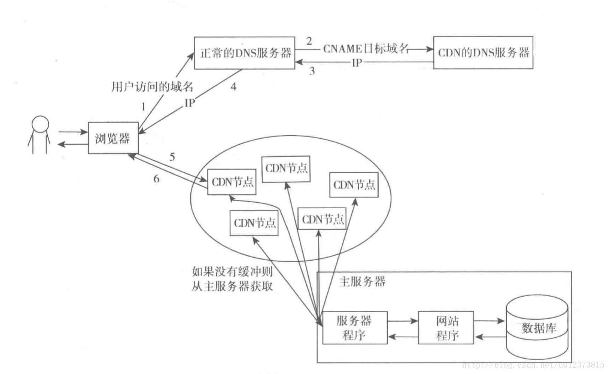

一个接口的访问量非常大，如何去优化？（高并发问题）
一般在面试中，当面试官问到了如果一个接口的访问量特别大，如何优化，那么其实是在问网站的高并发问题。
1. 应用和静态资源分离
刚开始的时候应用和静态资源是保存在一起的，当并发量达到一定程度的时候就需要将静态资源保存到专门的服务器中，静态资源主要包括图片、视频、js、css和一些资源文件等，这些文件因为没有状态所以分离比较简单，直接存放到响应的服务器就可以了，一般会使用专门的域名去访问。 通过不同的域名可以让浏览器直接访问资源服务器而不需要再访问应用服务器了。架构图如下：

2. 页面缓存
页面缓存是将应用生成的页面缓存起来，这样就不需要每次都生成页面了，从而可以节省大量的CPU资源，如果将缓存的页面放到内存中速度就更快了。如果使用Nginx服务器就可以使用它自带的缓存功能，当然也可以使用专门的Squid 服务器。页面缓存的默认失效机制一班都是按缓存时间处理的，当然也可以在修改数据之后手动让相应的缓存失效。 页面缓存主要是使用在数据很少发生变化的页面，但是很多页面是大部分数据都很少发生变化，而其中很少一部分数据变化频率却非常高，比如说一个显示文章的页面，正常来说完全可以静态化，但是如果文章后面有“顶”和“踩”的功能而且显示的有响应的数量，这个数据的变化频率就比较高了，这就会影响静态化。这个问题可以用先生成静态页面然后使用Ajax来读取并修改响应的数据，这样就可以一举两得来，既可以使用页面缓存也可以实时显示一些变化频率高的数据来。
其实大家都知道，效率最高、消耗最小的就是纯静态化的html页面，所以我们尽可能使我们的网站上的页面采用静态页面来实现，这个最简单的方法其实也是最有效的方法。但是对于大量内容并且频繁更新的网站，我们无法全部手动去挨个实现，于是出现了我们常见的信息发布系统CMS，像我们常访问的各个门户站点的新闻频道，甚至他们的其他频道，都是通过信息发布系统来管理和实现的，信息发布系统可以实现最简单的信息录入自动生成静态页面，还能具备频道管理、权限管理、自动抓取等功能，对于一个大型网站来说，拥有一套高效、可管理的CMS是必不可少的。
除了门户和信息发布类型的网站，对于交互性要求很高的社区类型网站来说，尽可能的静态化也是提高性能的必要手段，将社区内的帖子、文章进行实时的静态化，有更新的时候再重新静态化也是大量使用的策略，像Mop的大杂烩就是使用了这样的策略，网易社区等也是如此。
同时，html静态化也是某些缓存策略使用的手段，对于系统中频繁使用数据库查询但是内容更新很小的应用，可以考虑使用html静态化来实现，比如论坛中论坛的公用设置信息，这些信息目前的主流论坛都可以进行后台管理并且存储再数据库中，这些信息其实大量被前台程序调用，但是更新频率很小，可以考虑将这部分内容进行后台更新的时候进行静态化，这样避免了大量的数据库访问请求。
3. 集群和分布式
集群是每台服务器都具有相同的功能，处理请求时调用那台服务器都可以，主要起分流作用。
分布式是将不同的业务放到不同的服务器中，处理一个请求可能需要用到多台服务器，这样就可以提高一个请求的处理速度，而且集群和分布式也可以同时使用。
集群有两个方式：一种是在静态资源集群。另一种是应用程序集群。静态资源集群比较简单。应用程序集群在处理过程中最核心的问题就是Session 同步问题。
Session 同步有两种处理方式：一种是在Session 发生变化后自动同步到其他服务器，另一种就是用个程序统一管理Session。所有集群的服务器都使用同一个Session，Tomcat 默认使用就是第一种方式，通过简单的配置就可以实现，第二种方式可以使用专门的服务器安装Mencached等高效的缓存程序统一来管理session，然后再应用程序中通过重写Request并覆盖getSession 方法来获取制定服务器中的Session。
对于集群来说还有一个核心的问题就是负载均衡，也就是接收到一个请求后具体分配到那个服务器去处理的问题，这个问题可以通过软件处理也可以使用专门的硬件（如：F5）解决。

4. 反向代理
反向代理指的是客户端直接访问的服务器并不真正提供服务，它从别的服务器获取资源然后将结果返回给用户。

反向代理服务器和代理服务器的区别
代理服务器的作用是代我门获取想要的资源然后将结果返回给我们，所要获取的资源是我门主动告诉代理服务器的，比如，我门想访问Facebook，但是直接访问不了，这时就可以让代理服务器访问，然后将结果返回给我们。
反向代理服务器是我门正常访问一台服务器的时候，服务器自己去调用了别的服务器资源并将结果返回给我们，我门自己并不知道。
代理服务器是我们主动使用的，是为我们服务的，他不需要有自己的域名；反向代理服务器是服务器自己试用的，我门并不知道，它有自己的域名，我门访问它和访问正常的网址没有任何区别。
反向代理服务器主要有三个作用：
可以作为前端服务器跟实际处理请求的服务器集成；
可以做负载均衡
转发请求，比如说可以将不同类型的资源请求转发到不同的服务器去处理。
5. CDN
cdn其实是一种特殊的集群页面缓存服务器，他和普通集群的多台页面缓存服务器相比，主要是它存放的位置和分配请求的方式有点特殊。CDN 服务器是分布在全国各地的，当接收到用户请求后会将请求分配到最合适的CDN服务器节点获取数据。比如联通的用户分配到联通的节点，上海的用户分配到上海的节点。
CDN的每个节点其实就是一个页面缓存服务器，如果没有请求资源的缓存就会从主服务器获取，否则直接返回缓存的页面。
CDN分配请求（负载均衡）的方式是用专门的CDN域名解析服务器在解析域名的时候就分配好的。一般的做法是在ISP哪里试用CNAME将域名解析到一个特定的域名，然后再将解析到的那个域名用专门的CDN服务器解析道相应的CDN节点。如图。

第二步访问CDN的DNS服务器是应为CNAME记录的目标域名使用NS记录指向了CDN的DNS服务器。CDN的每个节点可能也是集群了多台服务器。
6. 底层的优化
前面说的所有都是架构都是建立在最前面介绍的基础结构之上的。很多地方都需要通过网络传输数据，如果可以加快网络传输的速度，那将会让整个系统得到改善。
7. 数据库集群和库表散列
大型网站都有复杂的应用，这些应用必须使用数据库，那么在面对大量访问的时候，数据库的瓶颈很快就能显现出来，这时一台数据库将很快无法满足应用，于是我们需要使用数据库集群或者库表散列。
在数据库集群方面，很多数据库都有自己的解决方案，Oracle、Sybase等都有很好的方案，常用的MySQL提供的Master/Slave也是类似的方案，您使用了什么样的DB，就参考相应的解决方案来实施即可。
上面提到的数据库集群由于在架构、成本、扩张性方面都会受到所采用DB类型的限制，于是我们需要从应用程序的角度来考虑改善系统架构，库表散列是常用并且最有效的解决方案。我们在应用程序中安装业务和应用或者功能模块将数据库进行分离，不同的模块对应不同的数据库或者表，再按照一定的策略对某个页面或者功能进行更小的数据库散列，比如用户表，按照用户ID进行表散列，这样就能够低成本的提升系统的性能并且有很好的扩展性。sohu的论坛就是采用了这样的架构，将论坛的用户、设置、帖子等信息进行数据库分离，然后对帖子、用户按照板块和ID进行散列数据库和表，最终可以在配置文件中进行简单的配置便能让系统随时增加一台低成本的数据库进来补充系统性能。
8. 总结
网站架构的整个演变过程主要是围绕大数据和高并发这两个问题展开的，解决方案主要分为使用缓存和多资源两种类型。多资源主要指多存储（包括多内存）、多CPU和多网络，对于多资源来说又可以分为单个资源处理一个完整的请求和多个资源合作处理一个请求两种类型，如多存储和多CPU中的集群和分布式，多网络中的CDN和静态资源分离。理解了整个思路之后就抓住了架构演变的本质，而且自己可能还可以设计出更好的架构。